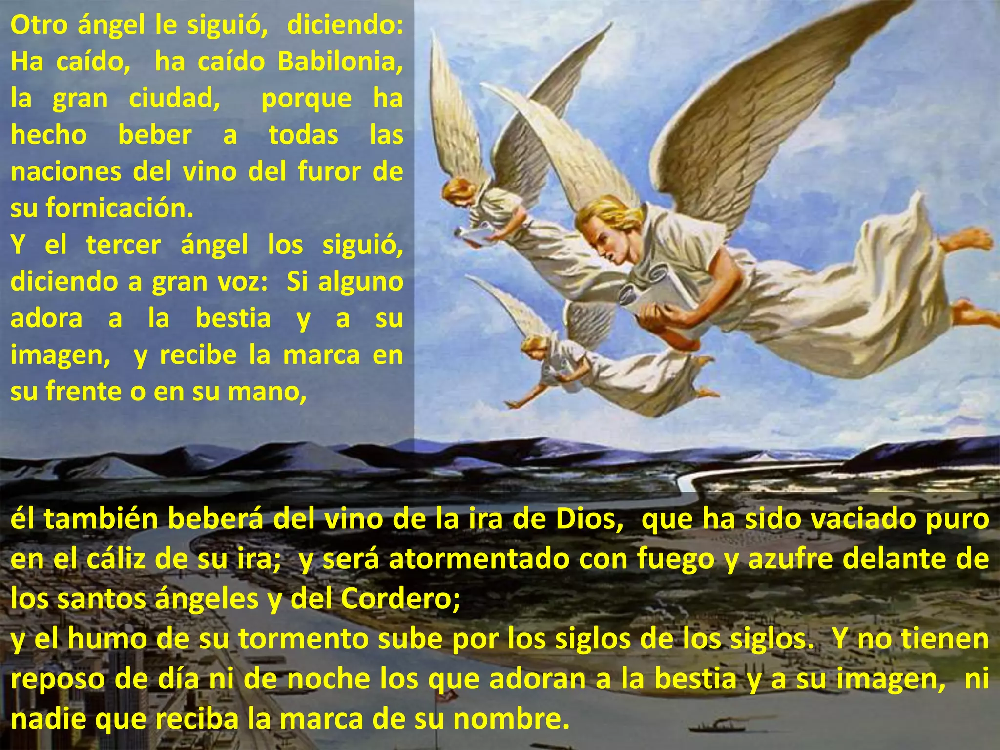
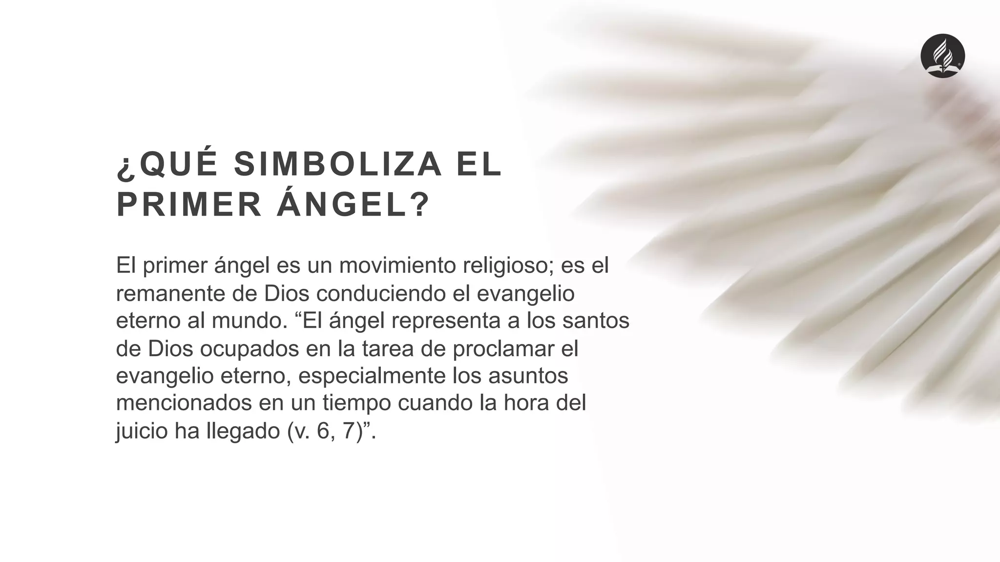
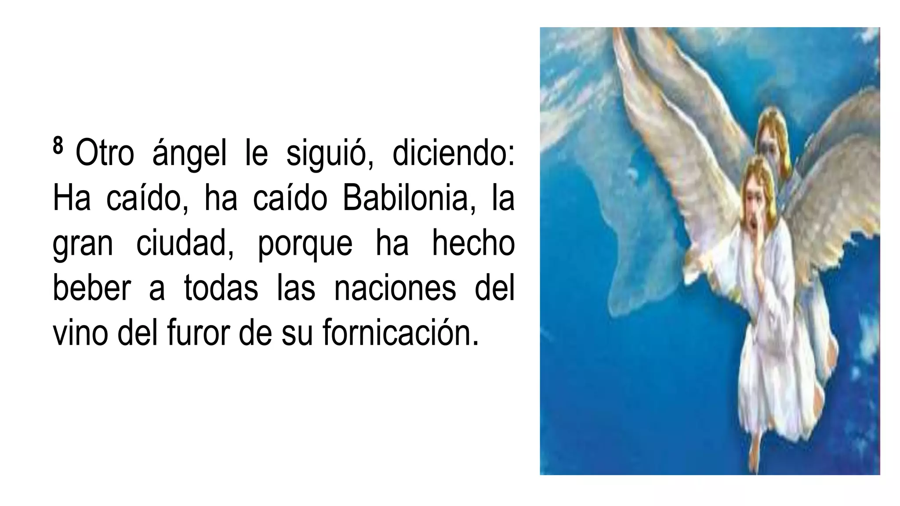
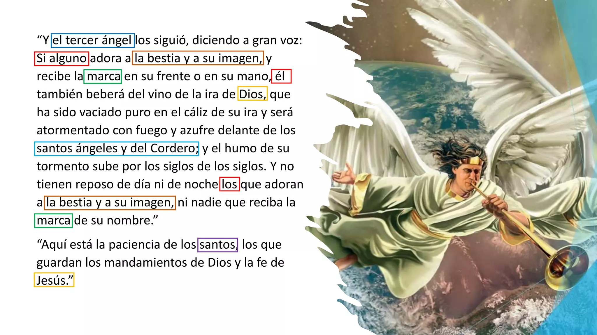

Los "mensajes de los tres ángeles" se refieren a un pasaje profético en el libro de Apocalipsis (Apocalipsis 14:6-12) que advierte a la humanidad sobre el juicio divino y la segunda venida de Cristo. En la tradición adventista, estos mensajes son centrales, proclamando un llamado a adorar a Dios, anunciando la caída de Babilonia (simbolizando sistemas de idolatría y falsedad) y advirtiendo sobre la adoración a la "bestia" y sus consecuencias.

mensaje del primer angel
Apocalipsis 14:6-7 dice 6 Vi volar por en medio del cielo a otro ángel, que tenía el evangelio eterno para predicarlo a los moradores de la tierra, a toda nación, tribu, lengua y pueblo, 7 diciendo a gran voz: Temed a Dios, y dadle gloria, porque la hora de su juicio ha llegado; y adorad a aquel que hizo el cielo y la tierra, el mar y las fuentes de las aguas.un mensaje simple pero condundente, a que commiensa el llamdo y la advertencia del juicio investigadpor,

segund angel
8 Otro ángel le siguió, diciendo: Ha caído, ha caído Babilonia, la gran ciudad, porque ha hecho beber a todas las naciones del vino del furor de su fornicación. el segundo angel comiensa anunciando la caida de babiloia y el porque sera condenada, babilonia representa un poder politico religioso que habla eregias y abobinaciones encontra de DIOS

tercer angel
9 Y el tercer ángel los siguió, diciendo a gran voz: Si alguno adora a la bestia y a su imagen, y recibe la marca en su frente o en su mano, 10 él también beberá del vino de la ira de Dios, que ha sido vaciado puro en el cáliz de su ira; y será atormentado con fuego y azufre delante de los santos ángeles y del Cordero; 11 y el humo de su tormento sube por los siglos de los siglos. Y no tienen reposo de día ni de noche los que adoran a la bestia y a su imagen, ni nadie que reciba la marca de su nombre.
12 Aquí está la paciencia de los santos, los que guardan los mandamientos de Dios y la fe de Jesús.
13 Oí una voz que desde el cielo me decía: Escribe: Bienaventurados de aquí en adelante los muertos que mueren en el Señor. Sí, dice el Espíritu, descansarán de sus trabajos, porque sus obras con ellos siguen..

nuestro principal mensaje el tercer angel
las advertencias directas para aquellos que adoren a la bestia y ocgtengan su marca, para nonostrtos los adevntistas esta es la condena para los hijos de la ramera que adoran a la imagen de la vestia, pero a la ves un mesaje de esperanza para los santos que esperan la segunda venidaas del hijo del hombre .